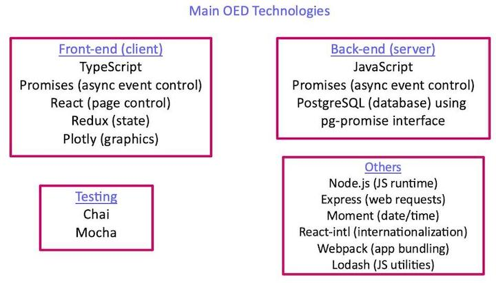

Learning Technology
Learn OED Technology
Documentation overview
Developer documentation
Information
Starting
Codebase Info
Further Details
Version Release
This information is for developers of the OED software so this information is not usually of interest to a general user.
The update to the Redux Toolkit (RTK) is not yet reflected in the documentation. As a result, some information may be out of date.
As a new developer, it can be daunting to understand and learn all of the technologies used in OED. This page, which everyone is encouraged to update, contains some resources that can be useful in this pursuit. This is not meant to be an exhaustive list nor rate these sites but to provide ones that project members or others have found useful. As always, you can contact the project with questions or for help.
The following graphic shows some of the main technologies in OED grouped by where they are used. The "Others" group are technologies that generally span multiple parts of OED and are seen depending on what you are doing. Developers often only need to know the technology in one area or even a subset of that area. This can make the task of learning the needed technologies much more manageable.

You may also find the Technology Overview giving an overview of the front-end process to be useful.
Git
- Pro Git is a comprehensive book with both introductory materials and advanced features that is available for free in electronic formats.
- GitHub has extensive help on the particular git platform that OED uses.
JavaScript
JavaScript is a very popular language for developing web applications. While it shares part of its name with Java, it is a different language. It is used in the back-end of OED. There are many sources of information on JavaScript with some listed here. Note some discuss how to customize web pages and other features that will not be used as heavily in this project.
- Mozilla has a JavaScript tutorials along with reference materials.
- codecademy has a Introduction to JavaScript course.
- Eloquent JavaScript is an online book that can also be downloaded.
- WIKIBOOKS is a book/tutorial.
- w3schools has a JavaScript tutorial.
- Khan Academy has a JavaScript tutorial but note the early sections on graphics are not as applicable.
- Learn JS has a JavaScript tutorial that includes online coding with unit testing.
- This GitHub repo has recommendations for how to learn various programming environments including JavaScript.
- This list has places to learn JavaScript given different backgrounds.
TypeScript
TypeScript is a language layered on top of JavaScript that adds typing and other features to make JavaScript more secure. It is used in the front-end of OED. There are many sources to learn TypeScript including one from the TypeScript organization.
JavaScript Promises
Promises is a system within JavaScript to help deal with the situation when some actions depend on others. In a nutshell, there are times you want to wait on one action to finish before another begins. This is used throughout the OED code base.
- Digital Ocean has a Understanding JavaScript Promises.
- There is another site with a JavaScript Promises introduction (and JavaScript too).
React
React is a JavaScript library for building user interfaces. It is used by many organizations and projects. It is used in the OED front-end.
- The react community has a React tutorial along with a Quick Start page.
- This GitHub repo has recommendations for how to learn various programming environments including React.
Redux
Redux is a JavaScript library to help handle state. OED uses it along with React. It is used in the OED front-end.
- The Redux community has a Redux tutorial along with reference materials.
Postgres
For several reasons, OED uses the PostgreSQL database. While much of database code is standard SQL, some is PostgreSQL specific to access specific features.
- The PostgreSQL website has extensive information and documentation.
- OED uses pg-promise to interface with PostgreSQL. Its website and many others have information on this system. As the name implies, it also uses promises.
Plotly
The graphics in OED are produced with Plotly using their JavaScript library. There are many other references for using Plotly.
Chai and Mocha
OED uses the Chai and Mocha testing frameworks to test the OED code base. Both sites have information on usage as well as many other sites. We generally only use a subset of the features that can be seen by looking at our test code.
Other packages
OED directly depends on dozens of npm JavaScript packages and indirectly on many more. Some ones that are used more extensively include node (for running the JavaScript), express (for web requests), moment (for date/time objects), lodash (utility functions), react-intl (internationalization) and webpack (bundle app). You will see these and others in the OED code base. It is often best to learn about them as needed.